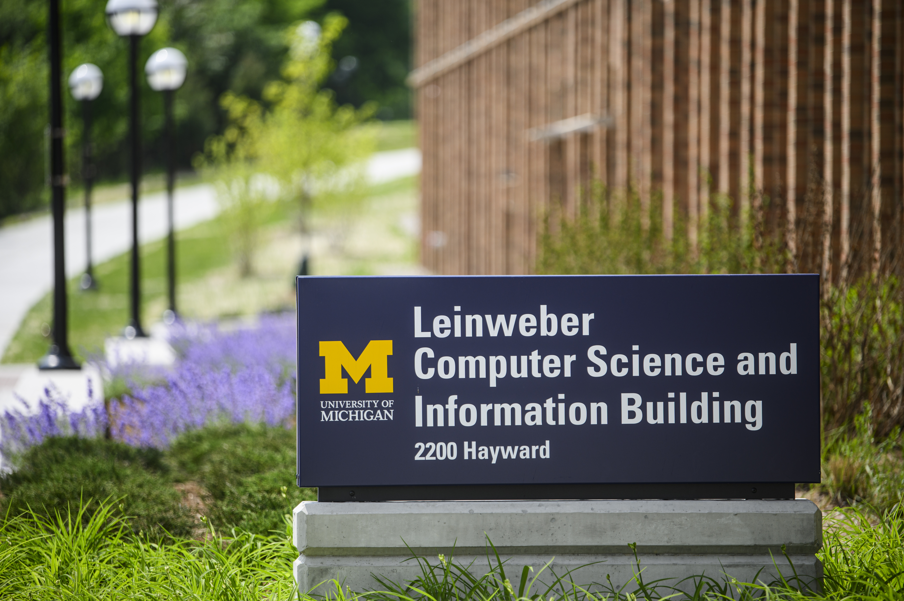
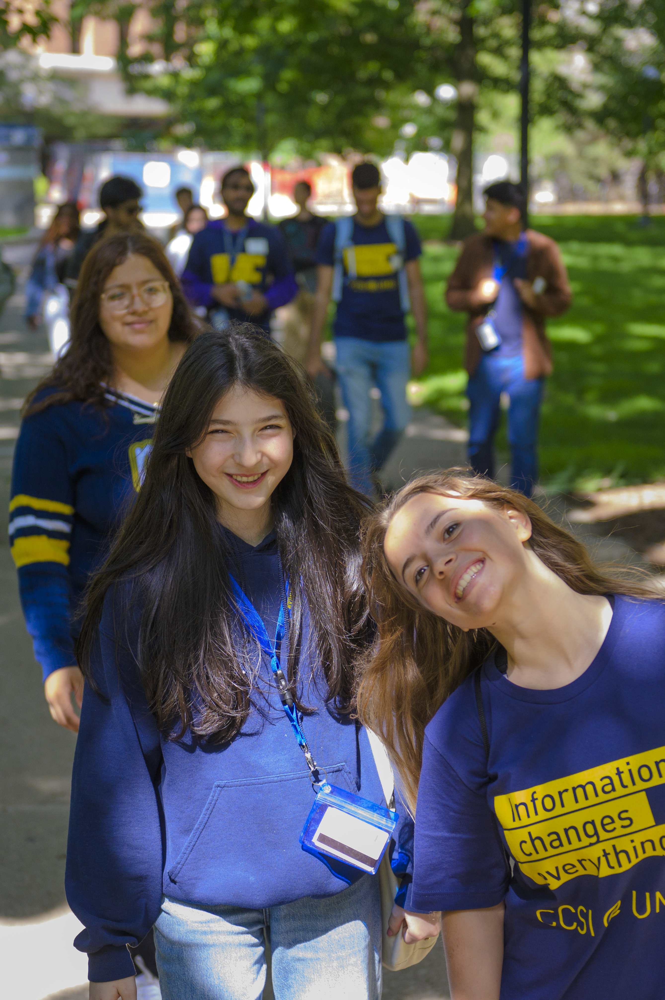

Goal-setting worksheet
Write two or three specific learning goals and connect each one to an action and evidence of progress.
Prompts
- What do I want to learn or practice?
- How will I contribute?
- What evidence will show growth?
Prototype resource
One place, many paths
Find practical support by stage, experience, or format. Each resource lives here once, even when several pages link to it.

This proof of concept demonstrates how ELO materials can be organized. Items labeled “Prototype resource” are useful page-based examples, not official ELO downloads. Official materials can replace them later without changing the navigation.

Narrow the list
Choose one option in any group. Choose “All” to clear that group.
Showing 17 resources.
Available support
Write two or three specific learning goals and connect each one to an action and evidence of progress.
Prototype resource
Separate confirmed information from assumptions before meeting a partner or entering a community.
Prototype resource
A short self-guided sequence for recognizing assumptions, learning local context, and approaching differences with humility.
Prototype resource
Record roles, access needs, working preferences, meeting routines, decision rules, and how the team will respond to missed commitments.
Prototype resource
Keep activities, owners, dependencies, milestones, review dates, and open questions in one shared location.
Minimum fields: task, owner, due date, status, dependency, and partner review.
Prototype resource
Choose one primary channel, document decisions, send concise updates, and raise questions before they become deadline risks.
Update pattern: progress, next action, question, risk, owner.
Prototype resource
Watch the video on YouTube (opens in a new tab)
Use a five-minute review to keep the plan current and make risks visible.
Prototype resource
Return to the shared goal, describe the specific issue, listen for different needs, and agree on one observable next action.
Start with: “I noticed… The effect is… Can we talk about…?” Seek instructor or ELO support when the team cannot resolve an issue safely.
Prototype resource
Describe the situation and effect, ask for the other perspective, agree on a change, and choose when to check back.
Keep feedback specific to work or behavior and give the other person time to respond.
Prototype resource
Pause while there is still time to change your approach.
Prototype resource
Make the work understandable and usable after the student team leaves.
Prototype resource
Thank collaborators, name their contributions, confirm what can be shared, and agree on whether future contact is welcome.
A strong closing is clear about boundaries and does not promise support the team cannot provide.
Prototype resource
Evaluate the process, learning, relationship, deliverables, and impact from more than one perspective.
Ask: What worked, what caused difficulty, who benefited, and what should change next time?
Prototype resource
Turn the experience into a concise story without exposing confidential partner information.
Prototype resource
Use an action, method, audience, and outcome to describe your contribution accurately.
Pattern: “Collaborated with [audience] to [action] using [method], resulting in [evidence or outcome].”
Prototype resource
Maintain relationships respectfully and only through the channels and expectations established with the partner.
Prototype resource